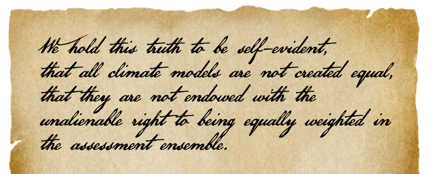

How to judge a model beauty contest?
ePUB • PDF • 10 m • 2101 w • comments
Every 6–7 years, major climate modeling centers around the world submit their climate simulations to an organization called the Coupled Model Intercomparison Project (CMIP). CMIP distributes the simulation data so that scientists around the world can analyze and compare the models. But what criteria should we use to judge or rank models? How do you decide whether one model is better than another? Do we care about superficial beauty or inner beauty? These questions raise fundamental issues relating to climate modeling.
A useful analogy that distances these issues from climate jargon is the college application process. How do you judge a college applicant? In many Asian countries, the numeric score on a single exam decides which colleges you can get into, effectively determining your whole career. In the U.S., college applicants submit grade point averages and (increasingly optional) test scores, along with essays and a resume of extracurricular activities. A “holistic” process weighing all this information is used to make admissions decisions in selective colleges. Often selective colleges receive many more qualified applicants than they can admit. Teachers and coaching companies “teach to the test” to help the students get ahead. One proposed solution to reduce the intense competitive stress is to first identify all applicants who pass an acceptability threshold and then use a lottery to select those who are admitted. So putting a lot of effort into obtaining scores above some threshold (or even perfect scores) would not really help.
Consider, on the other hand, the stress-free process of attending a non-selective local college – say the Iowa Public Community College (IPCC) – that has a tradition of admitting all applicants. But one year, IPCC finds that some of the applicants have unusually low test scores (or be it grade point averages), even though they have good extracurricular activities on their resume. To deal with this, IPCC decides to suddenly become selective and notifies the applicants that only those with numeric scores above a threshold value will be admitted.
Although some current applicants may be miffed about the goalposts being moved after the ball has been kicked, the IPCC’s decision may be acceptable as a short-term solution to maintain academic standards (to the extent measured by the numeric scores). But what are the long-term implications? Future applicants to IPCC may start to focus on improving the numbers that the college cares about, to the exclusion of factors like extracurricular activities that make them well-rounded. The newly selective community college should think long and hard before finalizing its new admissions policy
This is sort of the situation with the real IPCC, the Intergovernmental Panel on Climate Change, which uses the CMIP models for its assessments. In previous rounds of CMIP, explicit ranking of submitted models was not needed: Climate predictions were averaged among all the submitted models for assessment purposes, treating them equally. In the latest round of CMIP, the IPCC found that some of the submitted models were “running too hot”, i.e., simulating too much warming in recent years, even if they were better in some other respects, like simulating regional climate features better. (The rationale for deciding what is “too hot” deserves its own discussion, but we’ll just accept it for now.) If some models are running too hot, it will skew the average to be overly hot as well, resulting in “overprediction” of future warming when analyzing impacts.
To address this problem, the IPCC took a simple, if somewhat ad hoc, approach. Different models were weighted differently for averaging, based on how well they simulated the recent observed warming.1 The models that overpredicted the recent warming were weighted less compared to the rest of the models.
Even after the IPCC report was released, many studies have continued to average across all the CMIP models equally, out of habit and due to convenience. A recent Comment2 in Nature draws attention to this lack of awareness. The Comment reiterates that the models “running hot” should be downweighted when averaging. The issue is framed as “meritocracy” versus “democracy":3 Treating all models as equal would mean a democracy, but assigning higher weights to the better models would be a meritocracy.
Computing and using model weights, as done in the IPCC assessment, can be a complicated process. What end users usually want is a simple recipe. Neither the IPCC nor the Nature Comment provide such a recipe, but a follow-up article4 by the authors of the Comment suggests an alternative: screening out models whose transient climate response (TCR) lies outside the likely (66% likelihood range) of 1.4C to 2.2C. (TCR is the expected warming of global average temperature when the slowly increasing carbon dioxide concentration reaches double its value.)
The simple screening criterion is acceptable as a stopgap measure, as a practical “band aid” to fix an unexpected problem. But philosophically, it is a worrying development and should not be the long-term solution. It does not really address the hard question of why the physics-based models are “running too hot”. The TCR-based screening criterion goes further than the IPCC weighting approach by imposing a statistical constraint on predictions from physics-based models. (The IPCC approach uses model simulations of recent warming to compute the model weights.) Essentially the physics-based global climate models are no longer predicting global-average temperature, but merely serve to add regional climate detail to the statistically constrained global-average temperature prediction (a procedure referred to as dynamical downscaling).
There is the danger that a simple recipe like the TCR-screening could become the de facto metric for distinguishing “good models” from “bad models” in the world of model meritocracy. Like college applicants, model developers are Pavlovian. They will respond to behavioral incentives to develop “good models” and the climate science community should be careful to provide the right incentives. Established metrics are hard to dislodge even if they become counterproductive.5 Hence this longish blog post.
Evaluating climate models
Much of our intuition about evaluating predictive models comes from simulations of precedented events occurring in relatively simple models. Global warming is an unprecedented event occurring in a highly complex system with many interacting components. By definition, our past prediction experience will be of limited use in characterizing unverifiable long-term predictions of an unprecedented event. We will need to reason from basic scientific principles to understand how best to do that. Here are some issues to consider:
Global-average-temperature-centric thinking: Global average temperature is an important and useful measure to study climate change, but it is not the only metric that’s important. Climate impacts are determined by regional temperatures and rainfall, not the global average temperature. For example, a model could overestimate warming in the Northern Hemisphere and underestimate it in the Southern Hemisphere, but still end up with a small error in the global average. Such a model would be less useful than one that had the same global error uniformly, but would be weighted the same by a global-average metric. Similarly, a model that simulates the trends temperature well but not the trends in rainfall would also be less useful.
Model tuning and linear thinking: A climate model operates on a fairly coarse spatial grid, typically about 100x100 km (60x60 miles) in the horizontal, which cannot represent important processes like cloud formation. Approximate formulas, known as parameterizations, are used to represent clouds in models. The parameterizations have coefficients that are adjusted to make the simulations better fit observations – a process known as model tuning.6 Often tuning is done explicitly, with varying degrees of effort and success, but sometimes it is implicit in the history of the modeling effort.7
It is commonly assumed that a model that simulates the recent observed global warming trend better should also be trusted make a more reliable prediction of the future trend. Strictly speaking, that is only true for linear models, where nonlinear interactions among different components are not important. Prediction models used in many fields, such as regression models, fall into this category of linear models. For nonlinear models that have been tuned to simulate spatially averaged quantities, there is an ambiguity when using the same averaged quantities for validation. We cannot be sure whether we are validating the fundamental accuracy of the representation of processes like clouds, or simply validating the efficacy of the tuning process.
Tuning is often described as model calibration. In simple models with few adjustable coefficients, the tuning process can estimate the “best” values of the unknown coefficients for each process, thus calibrating the model. In a complex nonlinear system with many adjustable coefficients, coefficients for one process may end up getting adjusted to cancel errors associated with a different process. Instead of calibration, we get compensating errors. The more averaged a tuning target is, the worse this problem.8
Consider a climate model with a poor cloud parameterization. This parameterization can have many well-adjusted coefficients tuned to compensate for errors in other components, enabling the climate model to simulate recent short-term warming well.9 This simulation may even appear better than one using a more scientifically-sound, but less adjustable, cloud parameterization. But the long-term climate prediction using the poor parameterization can become less reliable, because the error compensation provided by the tuning is not guaranteed to be valid in a different climate.
Model tuning can definitely be beneficial in improving the fidelity of short-term (multidecadal) warming predictions of a model. But being able to tune parameterizations to adequately simulate recent warming should be considered a necessary condition for a good model rather than a sufficient condition.10 There needs to be enough wiggle room in the definition of “adequately simulate” to allow a model with better parameterizations, but less successful tuning, to be considered acceptable.
Declaration of Meritocracy

With the increase in the number and complexity of climate models, the spread in their predictions has increased. Therefore, it makes sense to validate them carefully before using them for climate assessments. By assigning weights to model in AR6, the IPCC has thrown down the gauntlet on the notion of model democracy or treating all models as equal. 11 How do we transition to a model meritocracy?
It is easy to find fault with the scalar weighting metric used by the IPCC, but it will require a lot of constructive discussion to come up with more general merit criteria for models. It will be a challenge to keep the merit criteria simple enough for wide adoption but at the same time comprehensive enough to cover important aspects of the model. One option is a multifaceted threshold approach, where minimum benchmarks must be met in multiple metrics for a model to be considered acceptable. This may be better than a weighting approach because it won’t incentivize overtuning (or overfitting) a model.
To return to the college admissions analogy, “teaching to the test” would be more acceptable if the test were broad enough and evaluated a range of skills. Using a single metric for assessing merit – like the ability to simulate the recent warming trend in global average temperature – is rather like buying a used car after a short test drive without looking under the hood. A well-tuned car will drive more smoothly, but will it also be reliable in the long haul? A thorough validation would require a mechanic to check engine parts under the hood of the car. A car that rattles a bit more during the test drive could still turn out to have more reliable parts under the hood and make for a better long-term purchase.
-
IPCC AR6 WG1 report, Chapter 4: Future global climate: scenario-based projections and near-term information ↩︎
-
Climate simulations: recognize the ‘hot model’ problem (Nature.com) ↩︎
-
Use of ‘too hot’ climate models exaggerates impacts of global warming (Science.org) ↩︎
-
How climate scientists should handle ‘hot models’ (CarbonBrief.org) ↩︎
-
The Tyranny of Metrics by Jerry Z. Muller (Princeton University Press) ↩︎
-
The Art and Science of Climate Model Tuning, Hourdin et al. Practice and philosophy of climate model tuning across six US modeling centers, Schmidt et al. ↩︎
-
Tuning to the global mean temperature record (Isaac Held blog) ↩︎
-
Interestingly, geoengineering can be thought of as an exercise in trying to tune the real world to fix global-average temperature, without fully canceling the regional climate impacts of greenhouse gas induced warming. ↩︎
-
Demystifying Climate Models by Andrew Gettelman and Richard B. Rood, p.244 (Springer Open Access) ↩︎
-
Cloud tuning in a coupled climate model: Impact on 20th century warming, Golaz et al., p.2249 ↩︎
-
There is another important issue – not discussed in this post – that we need to consider when averaging across models. That is model independence. Variants of the same underlying model should not be counted as separate models because it will skew the average. ↩︎